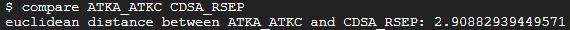
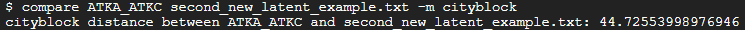
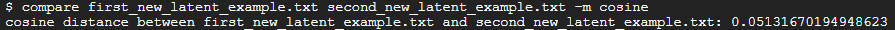
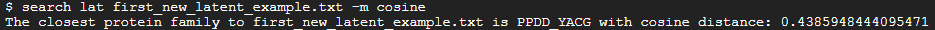
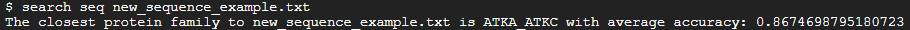

Examples
You can find the Euclidean distance between two families ATKA_ATKC and CDSA_RSEP by running the command:
compare ATKA_ATKC CDSA_RSEP

If you want to find the Cityblock distance between ATKA_ATKC and a new latent space stored at second_new_latent_example.txt, you can run the command:
compare ATKA_ATKC second_new_latent_example.txt -m cityblock

If you want to find the cosine distance between two new latent spaces stored at first_new_latent_example.txt and second_new_latent_example.txt, you can run the command:
compare first_new_latent_example.txt second_new_latent_example.txt -m cosine

You can find the closest protein family to first_new_latent_example.txt in cosine distance by running the command:
search lat first_new_latent_example.txt -m cosine

You can find the closest family to a new protein sequence (for example new_sequence_example.txt) by running:
search seq new_sequence_example.txt
